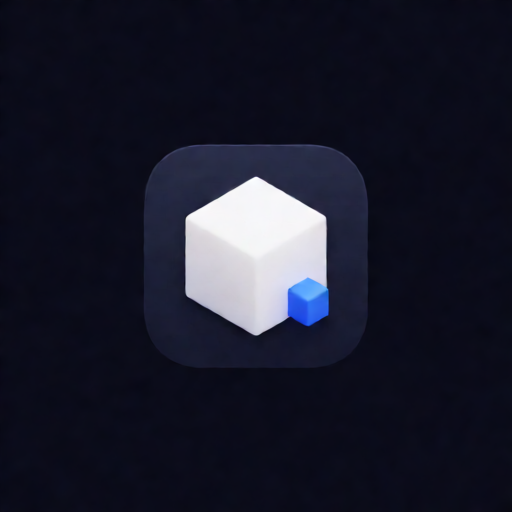

<!doctype html><html lang="zh-CN"><meta charset="utf-8"><meta name="viewport" content="width=device-width,initial-scale=1"><title>Unity MCP · Icon</title><style>body{margin:0;background:#101116;color:#f4f4f8;font:16px system-ui;min-height:100vh;display:grid;place-items:center}main{max-width:760px;padding:48px}section{display:flex;align-items:center;gap:32px;flex-wrap:wrap}img{border-radius:24%;width:256px;height:256px}.small{width:64px;height:64px}h1{font-size:28px;margin-bottom:8px}p{color:#b3b8c8;line-height:1.8}.light{background:#f1f3f8;padding:24px;border-radius:24px;display:flex;gap:24px;align-items:center}</style><main id="icon-reference"><section><div><h1>Unity / 团结 MCP</h1><p>Krea 2 Turbo 生成图标<br>白色主立方体 · 蓝色连接立方体<br>独立图案，不使用 Unity 官方标志</p></div></section><p>浅色环境与小尺寸</p><div class="light"></div></main></html>
